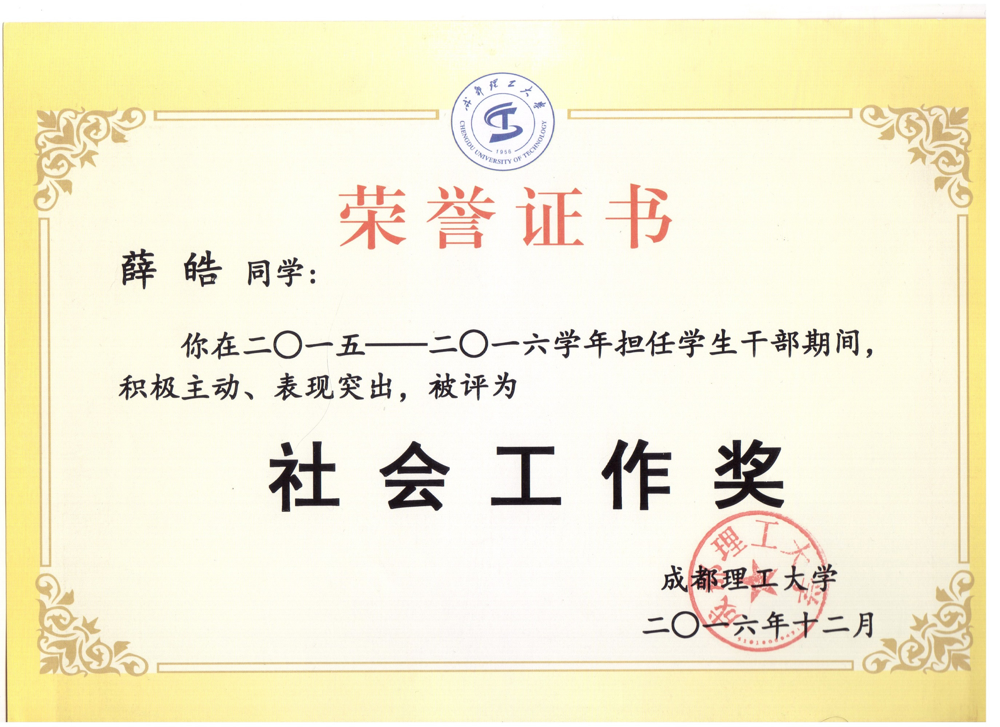

|
本科毕业证，证书编号遮住了，毕竟这个页面谁都能打开。带编号的图片可以私发。 |
 |
本科学位证，证书编号遮住了，毕竟这个页面谁都能打开。带编号的图片可以私发。 |
|
计算机二级，身份证遮住了。 |
|
这个和国家奖学金不太一样，但确实属于国家奖学金的一部分，评选也是一起的。国家奖学金是评选学习好的，奖金是8000元。国家励志奖学金是在做了贫困认定的学生里边选成绩比较好的，奖金是6000元。（这个证书太大了，放不进扫描仪，是用手机拍的照，其他图片都是扫描的。） |
|  |
大一当了一年班长，发了这个奖状加几百块奖学金 |
|
大二当了一年辅导员助理，发了这个奖状加几百块奖学金 |
|
大三当了一年辅导员助理，发了这个奖状加几百块奖学金（拿了三次这个奖状，囧） |
|
因为我们学校新盖的艺术学院大楼，所以四川省每年的艺考从四川大学搬到了我们学校，我也有幸参加了18年四川省艺考志愿者工作。学校管盒饭，还拿到了1100左右的志愿奖金。笑。 |
|
18年艺考优秀志愿者，在所有志愿者中以15%的比例评选优秀志愿者。其实大家都比我优秀的多，只不过参加艺考志愿的大多数是大四的学长学姐，而我当时大三，同组的学长学姐把这个优秀志愿者让给了我，毕竟这个奖完全是虚荣，没有多给一点志愿奖金的。笑。 |
|
19年又去参加了艺考志愿者，这次我们组的工作时间拉长了，最后拿到了1600元左右的志愿奖金。这次参加的时候就大四了，而且去年给过一个优秀志愿者了，今天优秀志愿者给了同组其他同学。 |
这个页面到这里就结束了，我知道网上有很多博客模板的，但我想自己从头敲一个出来，哪怕效果差一点，趁机学习一下前端，但自己代码基础确实不太好，照着别人的demo改都改不好，先暂时这样吧，后边慢慢完善。囧